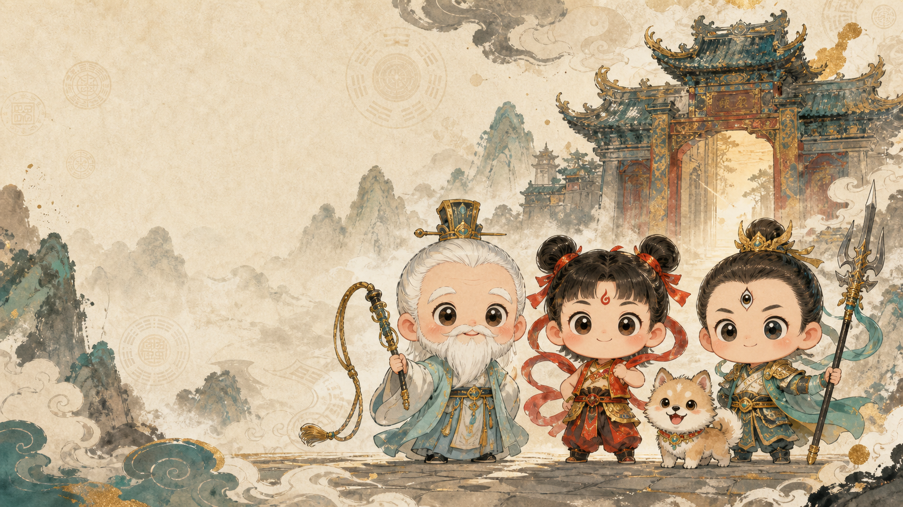
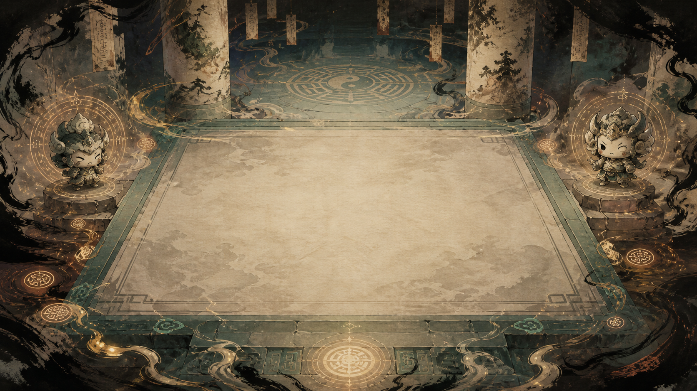
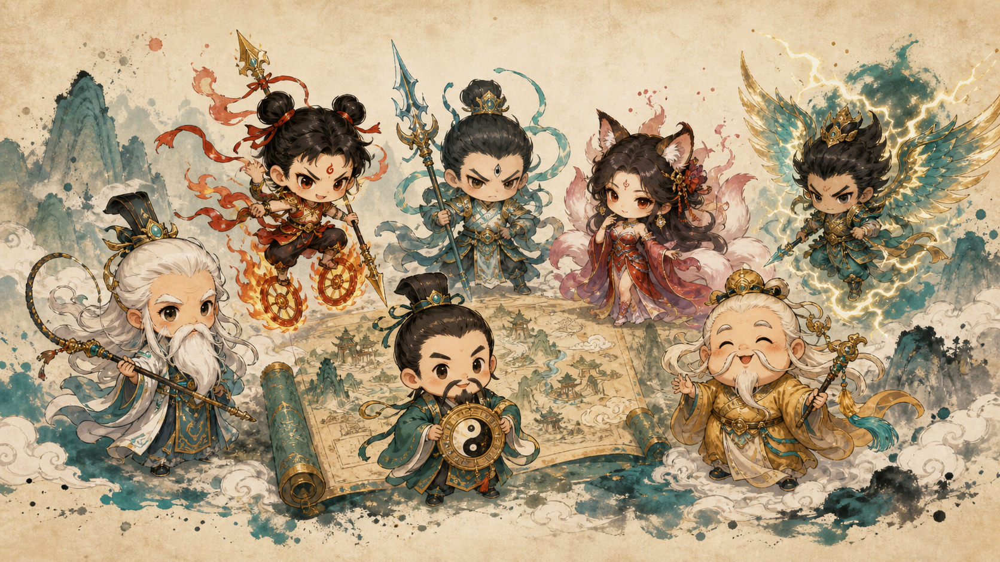

故宮御覽 封神演義・文道密室試煉
五大封神密室陣法
太極初開，萬仙雲集。五大上古玄門密室封鎖文道天機，攜手 1:1 Q版守護仙人，摘句尋章，破陣封神！
班級協力破陣
以匿名代號加入班級共同目標，只顯示全班進度，不顯示個人成績排行榜。
隱私提醒：不需輸入姓名、學號、電話或電子郵件；班級代碼與匿名代號只用於本次協力活動。
關卡地圖
沿著山河墨跡前進，點選發光的關卡節點破陣。手機可左右滑動探索。
乾坤太極陣
第 1 關
🖋
文思墨水
0
⚡ 密室陣眼封印
0 / 0 陣眼已破
陣法故事場景點擊收合，立即開始破陣

封神寶典

尚未收藏任何句子，到關卡中尋章摘句吧。
太極玄門，八大仙人各顯神通。點擊下方表情按鈕，隨時切換漫畫表情並聆聽真傳台詞！
設定
匯出進度碼
隱私提醒：進度碼不是加密檔，請勿填入姓名、學號或公開分享。
匯入進度碼
闖關模式
目前使用標準模式。